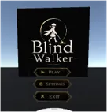

다양한 시각 장애 체험
5가지 시각 장애를 직접 경험하고 이해해보세요


VR로 경험하는 새로운 세계
시각장애인의 일상을 체험하고 이해하는 것.
가장 혁신적이고 몰입감 있는 방법입니다.
5가지 시각 장애를 직접 경험하고 이해해보세요
시각 정보 없이 오직 음향만으로 길을 찾아 이동합니다. 횡단보도의 신호음, 도시의 소음, 그리고 지팡이의 감각을 통해 공간을 인지하고 이동하는 경험을 해보세요.


여섯 단계의 점진적 난이도로 시각장애인의 세계를 깊이 있게 이해해보세요. 기초부터 고급까지, 단계별로 난이도가 상승합니다.
초급부터 숙련자까지, 누구나 즐길 수 있는 체계적인 난이도 설계
현실감 있는 3D 환경과 음향으로 완전한 몰입 경험
위험한 상황을 위험 없이 학습하고 대비
비장애인의 이해를 높이고 배려 증진

시각장애인의 일상을 경험하는 것.
가장 혁신적이고 감동적인 VR 어드벤처로 당신의 이해를 완성하세요.